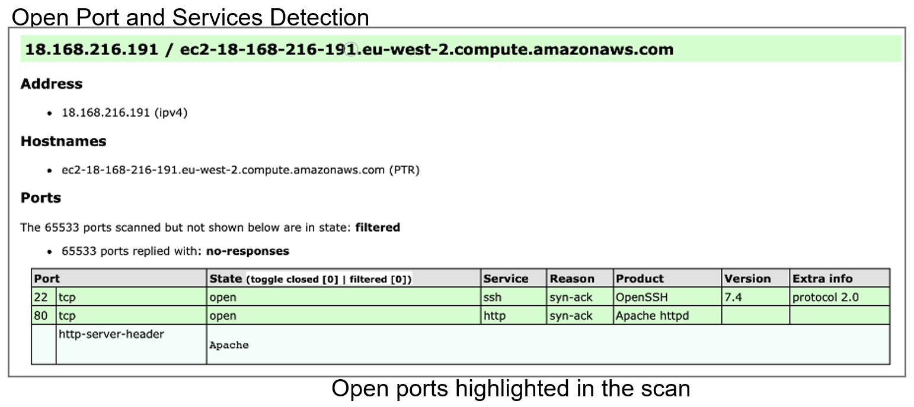
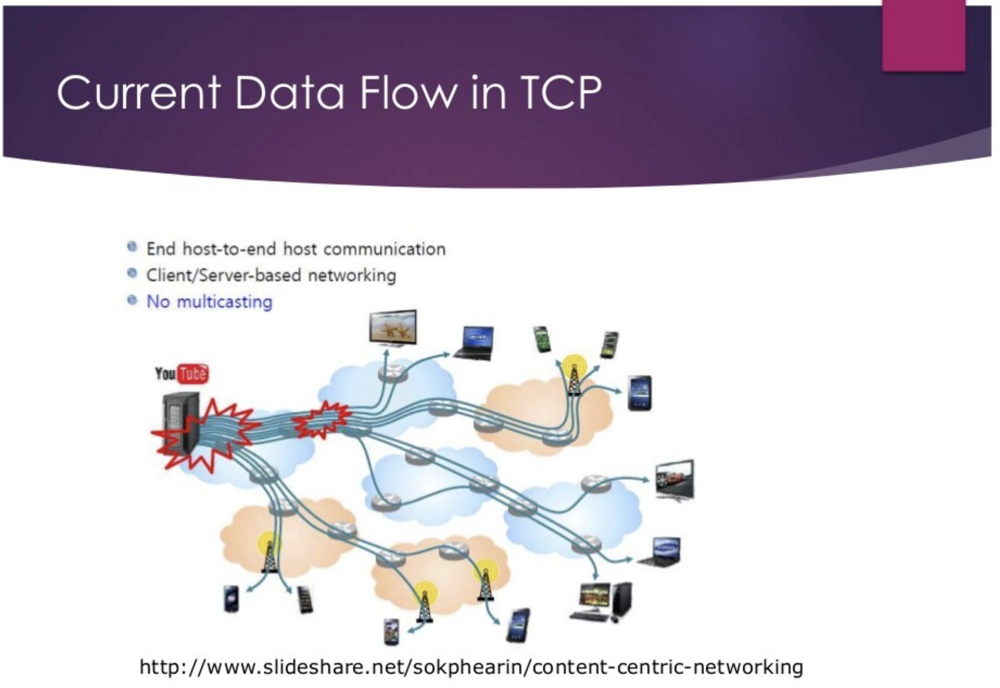
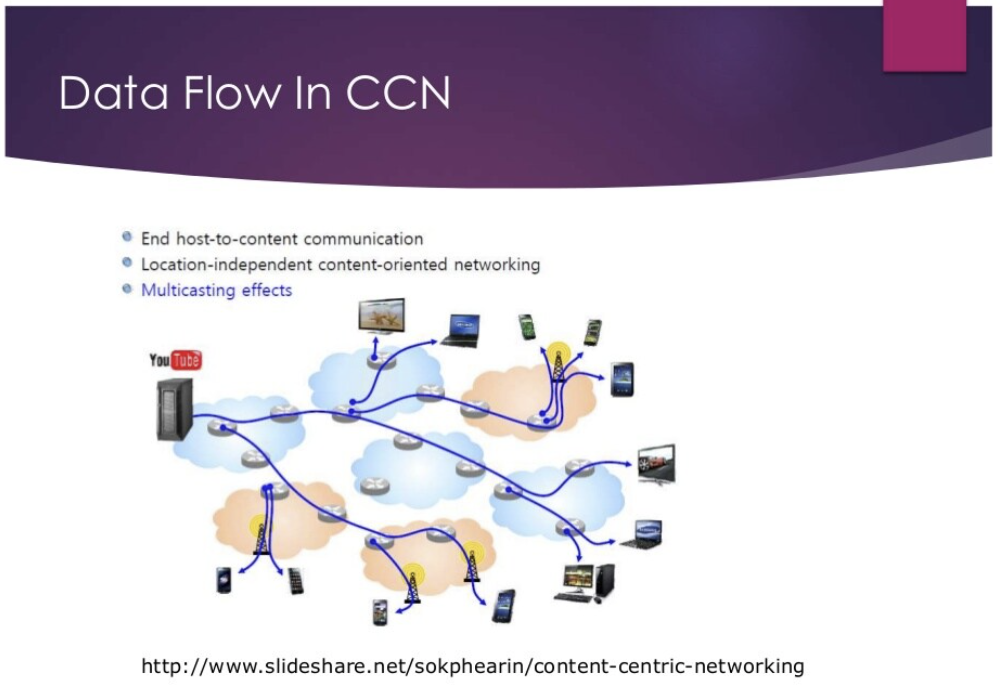

E-Portfolio
This is the E-Portfolio by Chris Debiccari for the University of Essex.
This is the E-Portfolio by Chris Debiccari for the University of Essex.

Rose-Hulman Institute of Technology, B.S. in Computer Science
Space Systems/Loral, Summer 2009 and Summer 2011
These are the hands-on learning assignments that we completed as a team. Some were divided up among each team member, others we attempted to complete individually and then discussed as a team to ensure a firm understanding of the learning objectives.
Shiraj's knowledge and experience with scanning and penetration testing tools made him a key component for this exercise. When another team member ran into difficulty we would ask him for clarification.
Each team member attempted the scans to learn more about the scanning tools, but Shiraj was tasked with performing the scans we would use for future exercises and documents.
The scans went smoothly, due to a combination of Shiraj's expertise and our ability to work together as a team. We recorded a traceroute, ping test, dig, and nslookup, and used these results to answer questions about the website and server we tested.
We ran another set of scans against our target website, noting any open ports or vulnerabilities found. This exercise went almost identical to the previous exercise, with each team member using the software and tools to gain a better understanding of the methods required, and Shiraj recording the results we would use for future team documents.
For this exercise, we read reviews of commonly used penetration testing tools and compared and reviewed them. We formed these opinions individually before discussing them during a team meeting. Shiraj was once again very helpful in clearing up any difficulty we had with understanding the reading materials.
Most of the tools have similar functionality. We prefered Kali Linux because it is open source.
After clearing up some confusion on our end, we discussed and chose which case we would research for this exercise: “Failure by the Department of Justice and Equality to impose the correct access restrictions on access to medical data of an employee” from 2017.
Due to a security access oversight, the medical data of an employee was visible to all staff members, violating GDPR. This was caused directly by poor database management, which is relevant to the learning material from previous courses.
This was a similar assignment to the previous exercise. We decided as a group to research a hack performed on the PlayStation Network, a digital media entertainment service mostly focused on multiplayer video games, but also serves video streaming and an online store.
Sony hid a lot of information about the hack, so the full extent of it is unknown. They did admit that some user data had been obtained through the hack. This breach also led to Sony chaging their terms of service for the PlayStation Network, forcing users to use an arbitrator for future legal disagreements instead of being allowed to file lawsuits or join a class action lawsuit.
The last team exercise required reading about alternatives to the IPv4 architecture and choosing one to present as the best alternative. We choose content centric networking (CCN) for its security, flexibility, and scalability.
 Regular meetings are an important part of any group project. Here is a quick overview of each meeting that occurred during the NISM module.
The focus of this meeting was the drafting and discussion of the Team Contract, which outlines the responsibilities and expectations of each team member. We were able to use our previous iteration of the Team Contract as a template, which allowed for a quick and easy acceptance of the new contract by all team members.
This meeting marked the beginning of planning out the upcoming Design Document. We decided to leave the separation of workload for next meeting, after we had a chance to run through the AWS Educate setup and had a better context of what was to be written.
We discussed as a team the details of the penetration test and went more in depth to ensure we understood the methods and results. With this newfound knowledge we were able to divide up the Design Document sections between group members.
We focused on discussing what each team member had researched and written for their respective section of the Design Document. Hearing what each member learned while working on their part ensures that all members also gain that knowledge going forward.
We talked briefly about the forum discussion and peer responses, but mainly focused on the Design Document. We made sure each member was on track to complete their section before the next team meeting so we could focus on proofreading and combining each member's individual contributions next week.
The goal of this meeting was to have a finalized Design Document ready for submission, ensuring we have ample time for proofreading before the deadline in a little over a week. We double checked the formatting and content, and also checked that we were within the word limits that were in place.
For this meeting we brainstormed questions to ask during the open office session that took place the following day. After compiling the list of questions, we tasked each member to read over the requirements for the Executive Summary and think about which section they would like to be responsible for.
We went over the Executive Summary sections as a group and assigned each section to a team member.
Each team member went over the research they've accomplished for their section of the Executive Summary. Other members provided feedback when they had previous experience with the subject.
We further refined and discussed each section of the Executive Summary as we added detail and expanded our research.
During this meeting we tried to integrate each member's section into a complete Executive Summary. We had a few problems because our original outline of where each section should fit together didn't quite flow as well as we expected. We decided to read and rearrange the sections over the next few days before submitting our final Executive Summary.
This meeting ended up not convening due to some scheduling conflicts and a lack of topics that require group discussion.
These were the two largest group tasks of the module.
Working on the design proposal was a little rough at first. With the exception of Shiraj, the knowledge and skills needed to research and write the document were new to us. With his support, we were able to complete our individual sections without too many roadblocks.
I was responsible for researching and explaining possible security challenges and vulnerabilities. I had a passing familiarity with the most likely scenarios, but I needed to research more in depth to provide the level of detail required for the design document.
The executive summary went much smoother. The work from the design document laid a solid foundation onto which we could create the executive summary. Shiraj laid out the vulnerabilities identified by the previous scans in an easy to understand way, which allowed the other sections to reference them naturally.
My responsibility for the executive summary was to analyse the vulnerabilities found and recommend how they could be closed. Most of the vulnerabilities were related to outdated software, and could be fixed in several straightforward ways.
This module has been very useful and informative. While previous modules focused on security from a legal or theoretical standpoint, this was the first time for many of us that we had a chance to use various tools and scanning software to see how to analyze a server and website to see how it could be vulnerable to external attacks. It also helped a lot that this module is set up as a team class from the beginning. While each exercise individually could be completed as a single person, it was very helpful to have the chance to ask group members for help when I encountered any difficulties with the suite of tools at my disposal. Also, like all group projects, it helps to have group members with a variety of undergraduate backgrounds who can help each other on group assignments by filling in the gaps in each individual’s knowledge with their own set of skills and experiences. Unfortunately my knowledge of programming and computer science was overshadowed by Shiraj in this module, because he had specific hands-on experience with the penetration testing and scanning tools we used throughout the module. Thankfully I was still able to leverage my skills to help research and write the parts of the group assignments I was responsible for.
Overall I feel confident in the work presented by both my individual contributions and the overall documents completed by my team. This module was longer than previous modules, and had more exercises and work to complete. This was even more apparent due to how busy myself and other team members were with other aspects of our lives outside of University. I think there are a few parts of the group documents and E-Portfolio that I could have improved upon. However, I also believe that given the time I had available and my understanding of the material presented that I contributed to the success of the team to the best of my ability. I know that some of the my other team members feel the same way about their sections of the design document and executive summary, which leads to an interesting conundrum where I feel that their contributions are just as high quality as I’ve come to expect from them from previous modules, and they might feel the same way about me. It’s therefore possible that all this worrying about our individual work is just a manifestation of each of us being our harshest critic.